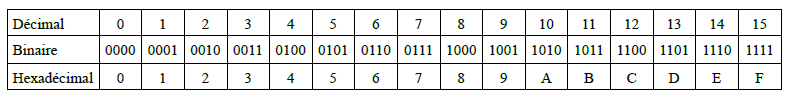

TRAVAILLER EN BASE 2, 10 ET 16¶
Repères historiques¶
L’invention du système binaire est souvent attribué à tort au savant allemand Wilhelm Gottfried Leibniz (1646-1716). En effet, le mathématicien et astronome anglais Thomas Harriot (1560-1621) avait déjà travaillé sur les systèmes non décimaux.
Leibniz s’inspire des figures de le l’empereur chinois Fuxi (-3000) que l’on peut considérer comme la première expression d’un codage binaire.
Comment représenter des informations sur une machine numérique ?¶
Unité d’information¶
Les machines numériques sont composées d’éléments manipulant l’information sous forme de deux états distincts. C’est la raison pour laquelle on les appelle machine binaire. Par convention, ces états sont notés \(0\) ou \(1\). En anglais, ces informations élémentaires sont appelées binary digit ou bit.
Un bit permet de représenter \(2^1=2\) informations.
Citer un système qui nécessite un bit pour coder son information.
Combien de bits sont nécessaires pour distinguer les 4 familles d’un jeu de cartes?
En généralisant on a la propriété importante: \(n\) bits permettent de représenter \(2^n\) informations.
Autres exemples
Combien de bits sont nécessaires pour distinguer les 26 lettres de l’alphabet ?
Justifier le fait qu’à l’origine 7 bits étaient suffisants pour coder du texte (en anglais!)
Les machines numériques manipulent habituellement des groupes de bits. Ainsi, un groupe de 8 bits forment un octet (!!!! ATTENTION !!!!! en anglais un octet est traduit par BYTE). Au delà de 8 bits on utilise le terme mot. On parle par exemple de mot de 16 bits, de mot de 32 bits (on trouve aussi le terme double mot) ou de mot de 64 bits (ou quadruple mot).
Les quantités d’informations stockées ou manipulées s’expriment avec les préfixes habituels reliés aux puissances de 10 (1 kilooctet (ko) \(= 1\times10^3\) octets, 1 mégaoctet (Mo) \(= 1\times10^6\) octets, 1 gigaoctet (Go) \(= 1\times10^9\) octets etc).
Remarque: certains informaticiens/électroniciens utilisent encore des définitions de ces quantités exprimées en puissances de 2 (\(2^{10}\), \(2^{20}\), \(2^{30}\), etc). Pour éviter les confusions, l’International Electrotechnical Commission (IEC) a normalisé ces appellations en décembre 1998. Voir lien.
Représentation binaire des entiers naturels¶
Représentation positionnelle¶
On présente les nombres entiers de manière classique en représentation positionnelle. Par exemple en base 10, la suite 123 signifie \(1\times 10^2+2\times 10^1+3\times 10^0\). En base 2, la suite 10011 signifie \(1\times 2^4+0\times 2^3+0\times 2^2+1\times 2^1+1\times 2^0\).
Dans un motif binaire, le bit le plus à droite est le bit de poids faible ou LSB (Least Significant Bit). A l’opposé, le bit le plus à gauche est le bit de poids fort ou MSB (Most Significant Bit). Le bit de poids faible peut être utilisé pour trouver la parité du nombre: \(0\) indique un nombre pair et \(1\) un nombre impair.
Conversion binaire - décimal¶
La conversion binaire - décimale d’un entier naturel découle simplement du mode de représentation positionnelle: on additionne les puissances de 2 présentes dans le motif binaire. Ainsi, pour l’exemple précédent on a:
\(10011_2=(1\times 2^4+0\times 2^3+0\times 2^2+1\times 2^1+1\times 2^0)_{10}=19_{10}\)
Remarque
La base a été indiquée ici en indice, on peut l’omettre lorsqu’il n’y a pas d’ambiguité.
Conversion décimal - binaire¶
On décompose le nombre entier en une somme de puissance de 2 par divisions entières successives tant que le quotient est supérieur ou égal à 2.
Exemple: soit \(N=23\) à convertir en binaire
%%latex
\begin{align*}
23 &= 2\times 11+1 \\
&= 2\times(2\times5 +1)+1\\
&= 2\times(2\times(2\times2 +1)+1)+1\\
&= 2\times(2\times(2\times(2\times1+0)+1)+1)+1
\end{align*}
Le résultat est donc \(N=10111_2\). On peut le retrouver en juxtaposant les restes des divisions “potences” (voir exemple au tableau).
Applications
Trouver la représentation binaire de \(77_{10}\) et \(123_{10}\).
Trouver la représentation décimale de \(1101\ 1011_2\).
Représentation hexadécimale¶
La représentation binaire devient rapidement encombrante. On lui préfère souvent la représentation hexadécimale (base 16). L’utilisation de cette base nécessite 16 caractères. Le tableau ci-dessous présente ces caractères ainsi que leur équivalence en base 10 et 2.

Conversions décimal - hexadécimal¶
Les principes de conversion décimal-hexdécimal et vice-versa sont identiques aux principes de conversion vus pour le binaire.
Applications
Trouver la représentation hexdécimale de \(77_{10}\) et \(123_{10}\).
Trouver la représentation décimale de \(6A0_{16}\).
Conversions binaire - hexadécimal¶
Pour passer du binaire à l’hexadécimal il suffit de grouper les bits par 4 et de les remplacer par leur équivalent hexdécimal (voir tableau ci-dessus).
Exemple
\(1101\ 1011_2 = DB_{16}\)
Pour convertir de l’hexadécimal en binaire, on remplace chaque chiffre hexadécimal par son équivalent binaire sur 4 bits.
Exemple
\(7A5_{16}= 0111\ 1010\ 0101_2\)
À retenir¶
L’information numérique est manipulée sous forme de bits. Les machines numériques travaillent avec des groupes de bits: des octets (8 bits) ou des mots (16, 32 ou 64 bits).
Les nombres entiers sont représentés en machine par des motifs binaires, c’est-à-dire une décomposition suivant les puissances de 2, par divisions successives par exemple.
Afin de limiter l’encombrement des motifs binaires on peut utiliser la représentation hexadécimale où chaque groupe de 4 bits du nombre binaire est remplacé par un chiffre hexadécimal compris entre 0 et \(F\). Le passage du décimal à l’hexadécimal se fait par divisions successives par 16.
Résumé des fonctions python rencontrées¶
Le type d’un objet python obj s’obtient par type(obj).
Les changements de base se font avec les fonctions int(), bin(), hex(). La conversion en chaine de caractères est réalisée par la fonction str(). Les chaines de caractères possèdent de nombreuses méthodes. Dans ce chapitre, la méthode strip() a été utilisée; elle permet d’éliminer des caractères en début et fin de chaine.
La division euclidienne d’un entier \(a\) par un entier \(b\) a également été abordée: \(a=b\times q + r\). En python, le quotient s’obtient par q = a // b et le reste par r = a % b.

Ce(tte) œuvre est mise à disposition selon les termes de la Licence Creative Commons Attribution - Pas d’Utilisation Commerciale 4.0 International.